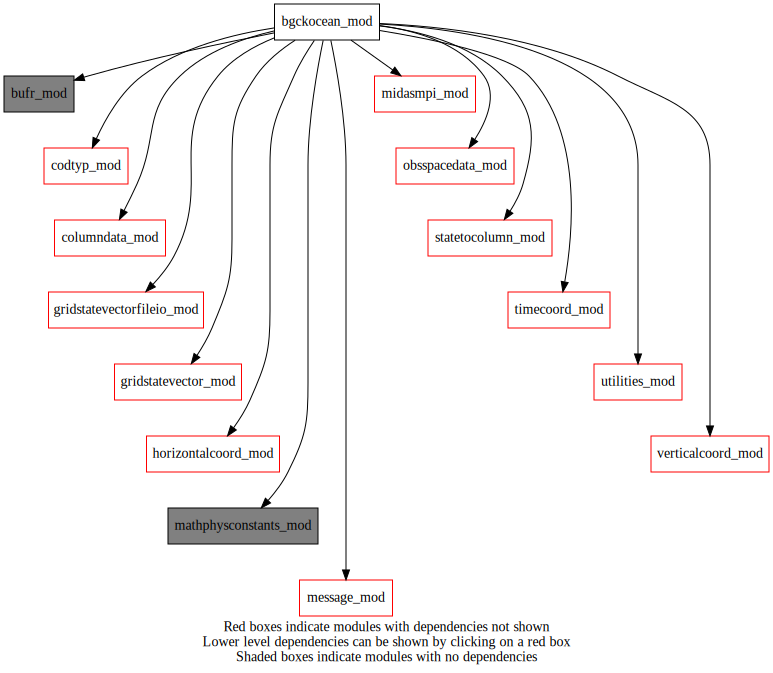
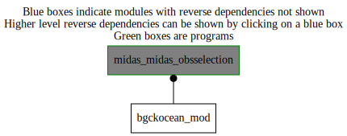

Dependency Diagrams:
 Direct Dependency Diagram¶
 Reverse Dependency Diagram¶
Description
MODULE bgckOcean_mod (prefix=’ocebg’ category=’1. High-level functionality’)
- Purpose
to perform ocean data background Check
Quick access
Needed modules
midasmpi_mod: MODULE midasMpi_mod (prefix=’mmpi’ category=’8. Low-level utilities and constants’)
utilities_mod: MODULE utilities_mod (prefix=’utl’ category=’8. Low-level utilities and constants’)
obsspacedata_mod: MODULE obsSpaceData_mod (prefix=’obs’ category=’6. High-level data objects’)
columndata_mod: MODULE columnData_mod (prefix=’col’ category=’6. High-level data objects’)
codtyp_mod: MODULE codtyp_mod (prefix=’codtyp’ category=’8. Low-level utilities and constants’)
gridstatevector_mod: MODULE gridStateVector_mod (prefix=’gsv’ category=’6. High-level data objects’)
gridstatevectorfileio_mod: MODULE gridStateVectorFile_mod (prefix=’gio’ category=’4. Data Object transformations’)
horizontalcoord_mod: MODULE HorizontalCoord_mod (prefix=’hco’ category=’7. Low-level data objects’)
verticalcoord_mod: MODULE verticalcoord (prefix=’vco’ category=’7. Low-level data objects’)
statetocolumn_mod: MODULE stateToColumn (prefix=’s2c’ category=’4. Data Object transformations’)
bufr_mod: MODULE bufr_mod (prefix=’bufr’ category=’8. Low-level utilities and constants’)
mathphysconstants_mod: MODULE MathPhysConstants_mod (prefix=’mpc’ category=’8. Low-level utilities and constants’)
timecoord_mod: MODULE timeCoord (prefix=’tim’ category=’7. Low-level data objects’)
message_mod: MODULE message_mod (prefix=’msg’ category=’8. Low-level utilities and constants’)Variables
Subroutines and functions
- subroutine bgckocean_mod/ocebg_bgchecksst(obsdata, datestamp, columntrlontrllev, hco)¶
- Purpose
to compute SST data background Check
- Arguments
obsdata [struct_obs ,inout] :: obsSpaceData object
datestamp [integer ,in] :: date stamp
columntrlontrllev [struct_columndata ,inout] :: column data on trl levels
hco [struct_hco ,in,pointer] :: horizontal trl grid
- Called from
- Call to
msg(),mmpi_setup_lonbands(),mmpi_setup_latbands(),utl_isnamelistpresent(),utl_abort(),gsv_allocate(),gio_readfromfile(),col_setvco(),col_getvco(),col_allocate(),col_getnumcol(),s2c_nl(),utl_tmg_start(),ocebg_getfgeamplification(),gsv_deallocate(),utl_tmg_stop(),obs_numheader(),obs_headelem_i(),obs_bodyelem_i(),col_getelem(),obs_bodyelem_r(),codtyp_get_codtyp(),ocebg_setflag(),obs_elem_c(),obs_headelem_r(),obs_bodyset_i(),obs_headset_i(),col_deallocate()
- subroutine bgckocean_mod/ocebg_bgcheckseaice(obsdata)¶
- Purpose
Compute sea ice data background check. The rms of the difference between the observations and the background values is calculated over a “swath” of data. For satellite observations, this is based on a single passage of the satellite over the domain. A flag is then set for all observations in the swath if the rms value is larger than the threshold specified for the observation type.
- Arguments
obsdata [struct_obs ,inout] :: obsSpaceData object
- Called from
- Call to
msg(),utl_isnamelistpresent(),utl_abort(),tim_getdatestamp(),obs_numheader(),obs_elem_c(),obs_headelem_i(),obs_bodyelem_i(),obs_bodyelem_r(),obs_bodyset_i()
- function bgckocean_mod/ocebg_setflag(obsvarno, bgcheck, selectcriteria)¶
- Purpose
Set background-check flags according to values set in a table. Original values in table come from ECMWF.
- Arguments
obsvarno [integer ,in] :: obsVarno, Universal Field-Identity Numbers defined in bufr_mod
bgcheck [real ,in] :: normalized background departure
selectcriteria (*) [real ,in] :: selection criteria for three levels
- Return
obsflag [integer ] :: obs flag
- Called from
- subroutine bgckocean_mod/ocebg_getfgeamplification(statevectoramplfactor, datestamp, hco)¶
- Purpose
Read wind speed fields for the last four days. In the operations: The background error used during the background check is then amplified in those regions by a factor that varies from 1, where the maximum wind speed is 21m/s or less, to 12, where the maximum wind speed is 24m/s or more. The factor is then filtered to produce a smoothly varying field. This amplified background error is used only to perform the background check.
- Arguments
statevectoramplfactor [struct_gsv ,inout] :: state vector to save amplification factor
datestamp [integer ,in] :: date stamp
hco [struct_hco ,in,pointer] :: horizontal trl grid
- Called from
- Call to
vco_setupfromfile(),gsv_allocate(),msg(),tim_datestamptoyyyymmddhh(),gio_readfromfile(),gsv_deallocate(),gio_writetofile(),gsv_smoothhorizontal()
{kind=link}
{kind=link}